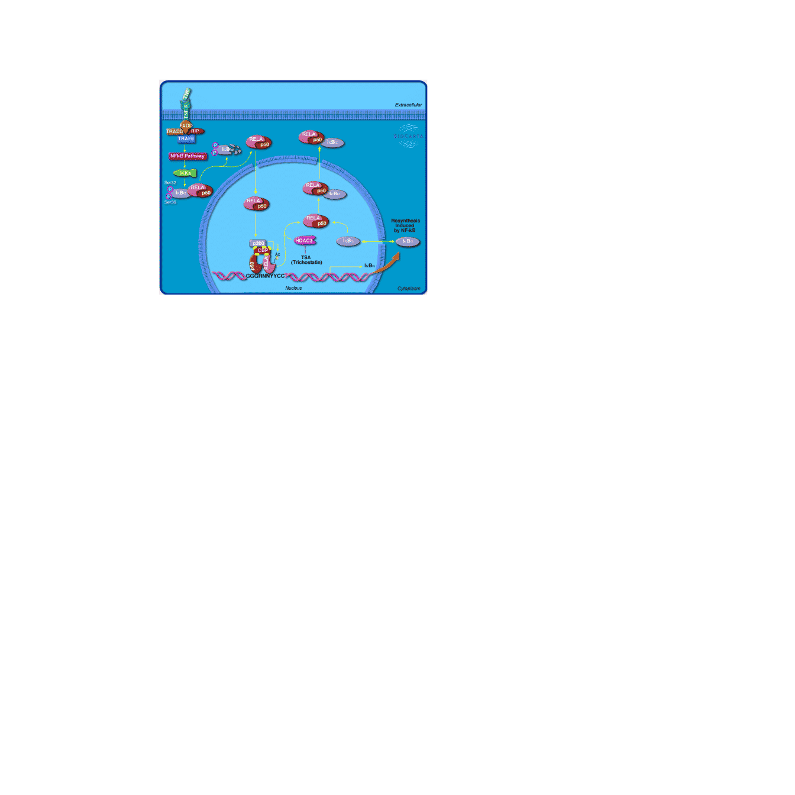
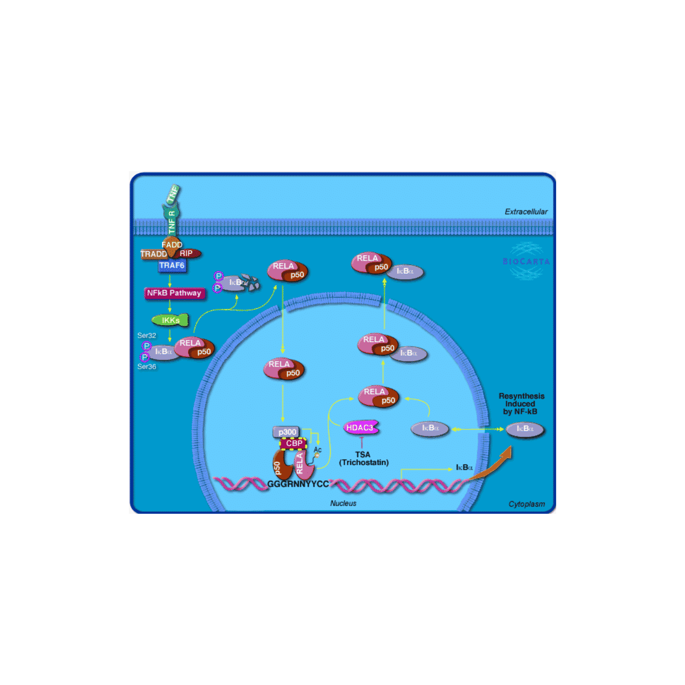

Customize BioCarta Pathway Images
Zuguang Gu (z.gu@dkfz.de)
2023-10-15
Source:vignettes/BioCartaImage.Rmd
BioCartaImage.RmdIntroduction
BioCarta is a valuable source of biological pathways which not only provides well manually curated pathways, but also remarkable and intuitive pathway images. One useful features of pathway analysis which is to highlight genes of interest on the pathway images is lost. Since the original source of BioCarta (biocarte.com) is lost from the internet, we digged out the data from the internet archive and formatted it into a package.
Preprocessing
The BioCarta data is collected from web.archive.org. This is an archive of BioCarta’s successor website cgap.nci.nih.gov which is also retired from internet. The snapshot was taken on 2017-01-22. The script is also shipped in the package:
system.file("script", "process.R", package = "BioCartaImage")## [1] "/private/var/folders/g3/f2y6rp510nxf3t5sj6h902bc0000gr/T/RtmpWjJOjR/temp_libpath43af403ac10f/BioCartaImage/script/process.R"The core data of this package is the coordinates of proteins in the pathway images. This information is included in the HTML code (in the <map>/<area> tags) of the web page of a certain pathway. We use the rvest package to extract such information.
Get pathways
The total pathways in the BioCarta database:
library(BioCartaImage)
ap = all_pathways()
length(ap)## [1] 314
head(ap)## [1] "h_RELAPathway" "h_no1Pathway" "h_gsPathway" "h_CSKPathway"
## [5] "h_pkcPathway" "h_srcRPTPPathway"A single pathway can be obtained by providing the pathway ID. It prints two numbers:
- The number of nodes without removing duplicated ones.
- The number of unique genes that are mapped to the pathway.
p = get_pathway("h_RELAPathway")
p## A BioCarta pathway:
## ID: h_RELAPathway
## Name: Acetylation and Deacetylation of RelA in The Nucleus
## 35 nodes, 16 genesMSigDB is also a popular resource for BioCarta pathway analysis. Here we also support MSigSB IDs for the BioCarta pathways. The MSigDB ID is very similar to the original BioCarta ID:
# MSigDB ID
get_pathway("BIOCARTA_RELA_PATHWAY")## A BioCarta pathway:
## ID: h_RELAPathway
## Name: Acetylation and Deacetylation of RelA in The Nucleus
## 35 nodes, 16 genesThe pathway object p is actually a very simple list which contains coordinates of member nodes.
str(p)## List of 6
## $ id : chr "h_RELAPathway"
## $ name : chr "Acetylation and Deacetylation of RelA in The Nucleus"
## $ bc : chr [1:35] "rela" "rela" "rela" "rela" ...
## $ shape : chr [1:35] "poly" "poly" "poly" "poly" ...
## $ coords :List of 35
## ..$ : num [1:42] 235 418 235 409 237 402 241 397 246 394 ...
## ..$ : num [1:42] 342 304 351 303 358 305 364 308 366 314 ...
## ..$ : num [1:42] 342 230 351 229 358 231 364 234 366 240 ...
## ..$ : num [1:42] 333 115 342 114 349 116 355 119 357 125 ...
## ..$ : num [1:42] 82 235 91 234 98 236 104 239 106 245 ...
## ..$ : num [1:42] 214 126 223 125 230 127 236 130 238 136 ...
## ..$ : num [1:40] 205 418 205 409 208 402 212 397 217 395 ...
## ..$ : num [1:40] 362 336 353 335 346 332 341 328 339 322 ...
## ..$ : num [1:40] 361 261 352 260 345 257 340 253 338 247 ...
## ..$ : num [1:40] 351 145 342 144 335 141 330 137 328 131 ...
## ..$ : num [1:40] 100 266 91 265 84 262 79 258 77 252 ...
## ..$ : num [1:40] 235 157 226 156 219 153 214 149 212 143 ...
## ..$ : num [1:34] 61 92 66 93 70 95 73 99 74 103 ...
## ..$ : num [1:34] 85 123 72 121 65 124 62 124 61 122 ...
## ..$ : num [1:18] 54 111 55 112 55 124 54 125 19 125 ...
## ..$ : num [1:40] 227 296 218 295 211 292 206 288 204 282 ...
## ..$ : num [1:10] 41 143 41 123 81 123 81 143 41 143
## ..$ : num [1:42] 210 265 219 264 226 266 232 269 234 275 ...
## ..$ : num [1:38] 55 202 71 205 75 202 80 201 84 202 ...
## ..$ : num [1:68] 50 57 48 51 47 48 48 46 50 47 ...
## ..$ : num [1:24] 65 19 70 21 72 23 71 25 63 44 ...
## ..$ : num [1:34] 426 355 436 356 445 358 450 362 453 366 ...
## ..$ : num [1:34] 391 133 401 134 410 136 415 140 418 144 ...
## ..$ : num [1:8] 182 153 178 156 174 149 182 153
## ..$ : num [1:12] 177 161 182 158 184 163 183 166 181 168 ...
## ..$ : num [1:10] 168 163 162 161 168 155 171 156 168 163
## ..$ : num [1:34] 164 156 158 162 164 164 164 168 150 170 ...
## ..$ : num [1:12] 170 170 171 165 173 159 175 160 179 167 ...
## ..$ : num [1:10] 173 156 162 151 159 146 170 148 173 156
## ..$ : num [1:18] 238 362 241 365 241 375 238 378 207 378 ...
## ..$ : num [1:34] 561 356 571 357 580 359 585 363 588 367 ...
## ..$ : num [1:30] 324 354 346 353 350 354 354 357 346 363 ...
## ..$ : num [1:34] 49 247 59 248 68 250 73 254 76 258 ...
## ..$ : num [1:34] 396 249 406 250 415 252 420 256 423 260 ...
## ..$ : num [1:18] 248 378 251 381 251 391 248 394 217 394 ...
## $ image_file: chr "h_relaPathway.gif"
## - attr(*, "class")= chr "biocarta_pathway"As the users, they do not need to touch the internal part of p, but the elements in the list are explained as follows:
-
id: The pathway ID. -
name: The pathway name. -
bc: The nodes in the original BioCarta pathways are proteins and some of them do not have one-to-one mapping to genes, such as protein families or complex. Herebccontains the primary IDs of proteins/single nodes in the pathway. The mapping to genes can be obtained bygenes_in_pathway(). -
shape: The shape of the corresponding protein/node in the pathway image. -
coords: It is a list of integer vectors, which contains coordinates of the corresponding shapes, in the unit of pixels. This information is retrieved from the HTML source code (in the<area>tag), so the the coordinates start from the top left of the image. The format of the coordinate vectors isc(x1, y1, x2, y2, ...). -
image_file: The file name of the pathway image.
As we have already explained in the previous text, the basic units in pathways are proteins/nodes, while not directly genes. Thus, the so-called “bc_id” is used as the primary ID in the package. However, for users, they do not need to touch all these details. They just directly interact with genes and pathways, the mapping from genes to “bc_ids” and then to pathways is done automatically in the package.
Similar as many other packages which contain BioCarta gene sets, the member genes of a pathway can be obtained by genes_in_pathway(). You can provide the pathway ID or the pathway object. The EntreZ ID is used as the gene ID type.
genes_in_pathway("h_RELAPathway")## [1] "1387" "8772" "8841" "4792" "1147" "3551" "8517" "4790" "2033" "5970"
## [11] "8737" "7124" "7132" "7133" "8717" "7189"## [1] "1387" "8772" "8841" "4792" "1147" "3551" "8517" "4790" "2033" "5970"
## [11] "8737" "7124" "7132" "7133" "8717" "7189"Plot the pathway
Next, let’s move to the main functionality of this package: customizing the pathway.
First, as many other grid plotting functions, grid.biocarta() draws a pathway (where the pathway image is imported as a raster object internally).
library(grid)
grid.newpage()
grid.biocarta("h_RELAPathway", color = c("1387" = "yellow"))You can specify the location and how the image is aligned to the anchor point.
grid.newpage()
grid.biocarta("h_RELAPathway",
x = unit(0.2, "npc"), y = unit(0.9, "npc"),
just = c("left", "top"),
color = c("1387" = "yellow"),
width = unit(6, "cm"))
You can also first create a viewport, then draw the pathway inside it.
grid.newpage()
pushViewport(viewport(width = 0.7, height = 0.5))
grid.biocarta("h_RELAPathway", color = c("1387" = "yellow"))
popViewport()
As the aspect ratio of the image is fixed, you can either set width or height. If both are set, the size of the image is internally adjusted to let the image maximally fill the plotting region.
One of the main use of the pathway image is to highlight genes of interest. The simple use is to set the color argument which is a named vector where gene EntreZ ID are names. When the colors are set, the genes are highlighted with dashed colored borders.
grid.newpage()
grid.biocarta("h_RELAPathway", color = c("1387" = "yellow"))
As normally BioCarta pathway images are colorful, it is quite difficult to find a proper color to be distinguished from other genes. There is a more flexible way in the package which allows to add self-defined graphics over or besides the genes.
To edit the pathway image, we create the pathway grob first (“grob” is short for “graphic object”).
grob = biocartaGrob("h_RELAPathway")The object grob basically contains a viewport and a raster image object. Later we can add more graphics for single genes to it.
Graphics for single genes are added by the function mark_gene(). You need to provide the pathway grob, the gene EntreZ ID and a self-defined graphics function. As you can imagine, the input of the function is the coordinate of the polygon of the gene in forms of two vectors: the x-coordinates and the y-coordinates.
There are two ways to implement the graphics function. First, the function directly returns a grob object. Later this grob is inserted to the global pathway grob.
There is a helper function pos_by_polygon() which returns the position of a certain side of the polygon.
In the following code, we add a yellow point to the left side of gene “1387” (CBP in the image).
The graphics are drawn in the pathway image viewport which already has a coordinate system associated. the “xscale” and “yscale” correspond to the numbers of pixels horizontally and vertically. So unit(1, "native") means 1 pixel in the original image.
grid.newpage()
grob2 = mark_gene(grob, "1387", function(x, y) {
pos = pos_by_polygon(x, y, where = "left")
pointsGrob(pos[1], pos[2], default.units = "native",
pch = 16, gp = gpar(col = "yellow"))
})
grid.draw(grob2)
If you have complicated graphics, you can consider to use gTree() and gList() to combine them.
If you are not familiar with gTree() and gList() or *Grob() functions. You can directly use the grid plotting functions such as grid.points() or grid.lines(). In this case, you have to set capture to TRUE, then the graphics will be captured as grobs internally.
grid.newpage()
grob3 = mark_gene(grob, "1387", function(x, y) {
pos = pos_by_polygon(x, y, where = "left")
grid.points(pos[1], pos[2], default.units = "native",
pch = 16, gp = gpar(col = "yellow"))
}, capture = TRUE)
grid.draw(grob3)With this functionality, you can implement complicated graphics to associate a gene. In the following example, we create a viewport and put it to the left of the gene.
grid.newpage()
grob4 = mark_gene(grob, "1387", function(x, y) {
pos = pos_by_polygon(x, y)
pushViewport(viewport(x = pos[1] - 10, y = pos[2],
width = unit(4, "cm"), height = unit(4, "cm"),
default.units = "native", just = "right"))
grid.rect(gp = gpar(fill = "red"))
grid.text("add whatever\nyou want here")
popViewport()
}, capture = TRUE)
grid.draw(grob4)Session info
## R version 4.3.1 (2023-06-16)
## Platform: x86_64-apple-darwin20 (64-bit)
## Running under: macOS Ventura 13.2.1
##
## Matrix products: default
## BLAS: /Library/Frameworks/R.framework/Versions/4.3-x86_64/Resources/lib/libRblas.0.dylib
## LAPACK: /Library/Frameworks/R.framework/Versions/4.3-x86_64/Resources/lib/libRlapack.dylib; LAPACK version 3.11.0
##
## locale:
## [1] C/UTF-8/C/C/C/C
##
## time zone: Europe/Berlin
## tzcode source: internal
##
## attached base packages:
## [1] grid stats graphics grDevices utils datasets methods
## [8] base
##
## other attached packages:
## [1] BioCartaImage_0.99.7 knitr_1.44 BiocStyle_2.28.1
##
## loaded via a namespace (and not attached):
## [1] vctrs_0.6.3 cli_3.6.1 magick_2.8.0
## [4] rlang_1.1.1 xfun_0.40 stringi_1.7.12
## [7] purrr_1.0.2 textshaping_0.3.7 jsonlite_1.8.7
## [10] glue_1.6.2 rprojroot_2.0.3 htmltools_0.5.6.1
## [13] ragg_1.2.6 sass_0.4.7 rmarkdown_2.25
## [16] evaluate_0.22 jquerylib_0.1.4 fastmap_1.1.1
## [19] lifecycle_1.0.3 yaml_2.3.7 memoise_2.0.1
## [22] bookdown_0.35 BiocManager_1.30.22 stringr_1.5.0
## [25] compiler_4.3.1 fs_1.6.3 Rcpp_1.0.11
## [28] systemfonts_1.0.5 digest_0.6.33 R6_2.5.1
## [31] curl_5.1.0 magrittr_2.0.3 bslib_0.5.1
## [34] tools_4.3.1 pkgdown_2.0.7 cachem_1.0.8
## [37] desc_1.4.2